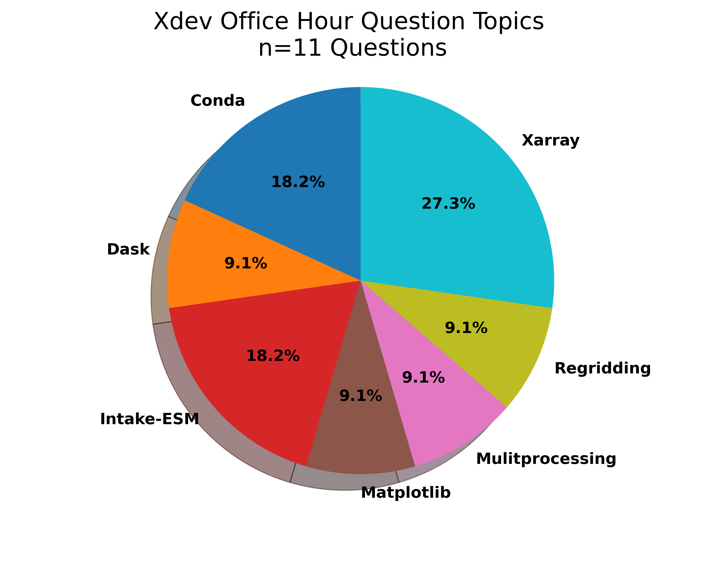

Posts tagged xarray
Calculating Temporal Averages with GeoCAT-comp vs Xarray
- 29 November 2022
With temporally large datasets, computing seasonal and annual averages are a great ways to summarize the data and make it easier to manage and understand. You may want to take hourly, daily, or monthly data and compute seasonal or annual averages.
When using data that has a daily or finer resolution (e.g. hourly), calculating an annual average is simple. Every day and hour has the same length, so an unweighted average will work.

Intake-ESM Tutorial
- 02 December 2021
The Project Pythia Python Tutorial Seminar Series continues with the Intake-ESM Tutorial on Wednesday, December 8 at 1 PM Mountain Standard Time. This session will be led by Max Grover.
The content for this tutorial is hosted in the .ipynb notebook file(s) within the tutorial directory of this repository.
ESDS Update November 2021
- 02 December 2021
November was an active month! There were a couple of ESDS Forum talks, a variety of answered Python questions during office hours, and a Python tutorial!
Check out the following ESDS update for the month of November 2021.
Correctly Calculating Annual Averages with Xarray
- 19 November 2021
A common component of people’s workflows is calculating annual averages, which helps reduce the frequency of datasets, making them easier to work with. Two of the data frequencies you may be looking to convert to annual include:
Daily (365 days in each year)

Processing Data from the NCAR Mesa Lab Weather Station
- 12 November 2021
There is a weather station located at the Mesa Lab, situated along the Foothills of the Rockies in Boulder, Colorado!
By the end of this post, you will be able to plot an interactive visualization of the weather data collected at the Mesa Lab, as shown below!

ESDS Update October 2021
- 28 October 2021
October has been an active month! There were a variety of talks, a variety of answered Python questions during office hours, and a Python tutorial!
Check out the following ESDS update for the month of October 2021.

How to Use xarray.map_blocks for Vertical Interpolation of a 3D Field
- 28 April 2021
Within this example, we cover how to use xarray.map_blocks to calculate the mixed-layer depth within the CESM POP model output.
This calculation is “embarassingly parallel” such that each calculation is done within a single a column. The calculation should be easily computed within each column across the model domain. This is where map_blocks can be used to improve the performance of this metric.

Indexing unstructured grids with the Power of Xoak
- 23 April 2021
This week, there a post within the Zulip regarding how to deal with indexing CAM-SE data. The tricky part here is that is an unstructured grid, where there is only one column to the data, ncol.
Here is an example of the dataset we are working with. Notice that both lat and lon have the same dimension, ncol.
Writing multiple netCDF files in parallel with xarray and dask
- 29 June 2020
A typical computation workflow with xarray consists of:
reading one or more netCDF files into an xarray dataset backed by dask using xr.open_mfdataset() or xr.open_dataset(chunks=...),

The Significance of Time
- 28 August 2019
Time is relative, as my coworker Anderson likes to remind me every time manipulating this coordinate proves to be relatively difficult.
This post is to be the first in a series of my struggles coming from an atmospheric science background and transitioning into software. My hope is that if I detail pain points and headaches I encounter along my journey, you won’t have to.